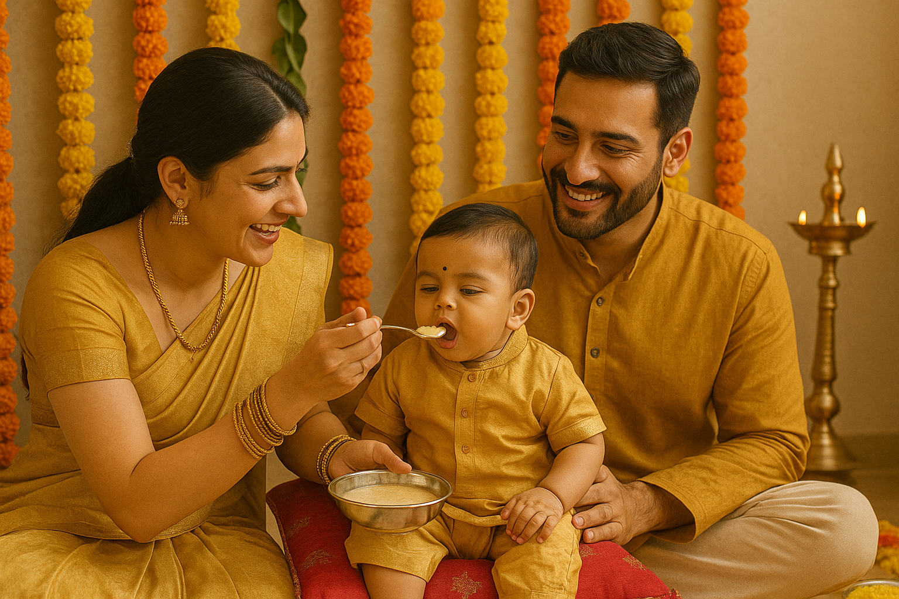

Featured Ceremonies

Mehndi Ceremony
WeddingA pre-wedding ritual where intricate henna designs are applied to the bride's hands and feet

Griha Pravesh
House WarmingA Hindu ritual performed before entering a new home, seeking blessings and prosperity

Annaprashan
BirthThe ceremony marking a baby's first intake of solid food, typically performed at six months

Kumbh Mela
PilgrimageThe world's largest religious gathering, held every 12 years, where devotees bathe in sacred rivers

Thread Ceremony
Coming of AgeUpanayana marks a boy's transition to adolescence and the beginning of formal education